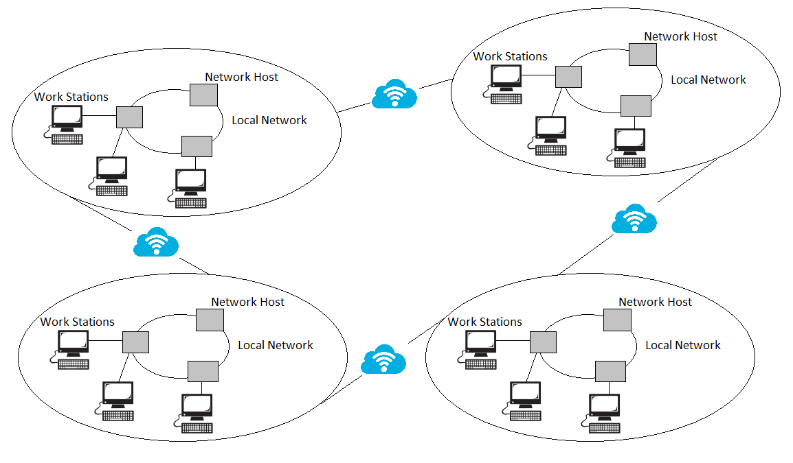
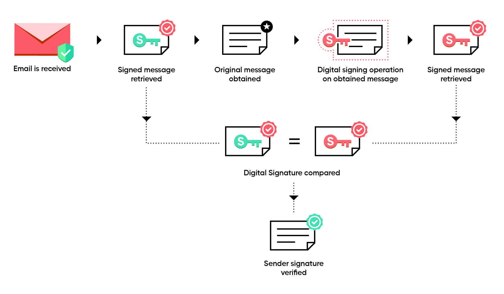
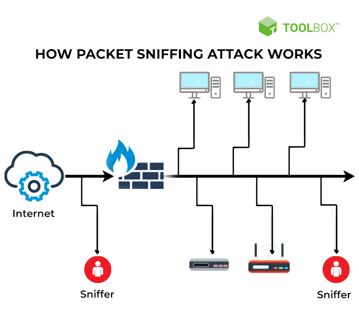
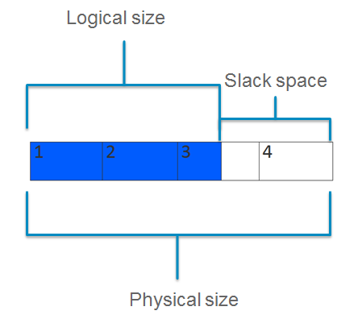
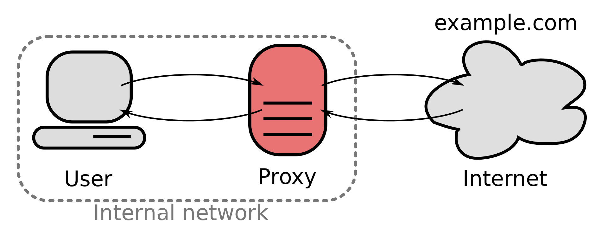

Introdução
Com o avanço da tecnologia, estamos acompanhando cada vez mais crimes ocorrendo nos espaços digitais das redes. As provas eletrônicas podem ser coletadas de uma ampla gama de fontes, tais como computadores, smartphones, armazenamento remoto, sistemas aéreos não tripulados, equipamentos embarcados em navios, e muito mais.
Sendo assim, governos no mundo todo estão sendo confrontados com uma necessidade crescente de investigar crimes cometidos parcialmente ou totalmente pela Internet ou outros meios eletrônicos. Foi necessário então, criar procedimentos únicos para buscar, localizar e preservar eficazmente todos os tipos de provas eletrônicas, e nesse contexto surge a Análise Forense Digital.
Análise Forense Digital é um ramo da ciência forense que trabalha com um conjunto de técnicas para coleta e exame de evidências digitais, reconstrução de dados e ataques, identificação e rastreamento de invasores.
O principal objetivo da perícia forense digital é extrair dados da evidência eletrônica, analisá-la e apresentar as conclusões para a acusação. Todos os processos utilizam técnicas forenses sólidas para garantir que as descobertas sejam admissíveis em tribunal.
Ciência Forense em Redes
A análise de um disco rígido é um procedimento relativamente bem definido quando comparado à análise de uma rede, nelas os investigadores enfrentam um número de desafios muito mais complexos. Os dados de sistemas em rede são dinâmicos e voláteis, tornando difícil fazer uma análise de uma rede sobre um recorte temporal. Diferentemente de um computador, não é viável desligar uma rede para realizar a investigação, pois os investigadores possuem a responsabilidade de recolher provas com o mínimo de interrupção aos negócios que dependam da rede, além disso, o fechamento de uma rede resultará na destruição da maior parte das provas digitais nelas contidas.
Para tornar mais complexas suas operações, ao contrário do crime no mundo físico, um criminoso pode estar em vários lugares de uma rede. Esta distribuição da atividade criminosa torna ainda mais difícil isolar a cena do crime.

Em contrapartida, ter provas distribuídas em muitas máquinas pode ser vantajoso para a investigação. A distribuição das informações dificulta a destruição das evidências, se as provas são danificadas em um computador uma cópia pode ser encontrada em outro. Muitas organizações fazem sobretudo um backup de suas informações regularmente, o que ajuda ainda mais em todo processo.
Papel da Internet na Análise Forense
Com o crescimento exponencial do uso da Internet, cada vez mais pessoas estão usando computadores para cometer crimes, e por consequência, aumentando o número de evidências criadas em ambientes digitais. Sentindo-se protegidos por um suposto anonimato, os indivíduos buscam informações na internet que não buscariam no mundo físico e expressam suas opiniões mais controversas, falas que normalmente guardariam para si mesmos.
Esses indivíduos muitas vezes não possuem o conhecimento técnico para saber que os servidores na Internet guardam uma quantidade significativa de informações sobre suas atividades pessoais. Alguns desses dados são temporários, podendo permanecer nos servidores durante poucos segundos, minutos ou dias, enquanto outras formas de dados digitais podem ser recuperados anos após os incidentes. Estes dados podem nos trazer informações sobre os pensamentos e interesses particulares de um indivíduo, padrões de comportamento na web e onde estava em um dia específico, informações que podem ser muito úteis para uma investigação. Tudo isso torna a Internet um excelente local para encontrar evidências sobre algum suspeito.
Anonimato Online
Em uma investigação é importante que os investigadores estejam familiarizados com o anonimato on-line para se proteger, e entender como os criminosos o usam, para evitar serem descobertos. Além de ocultar informações pessoais, como o nome, e número de telefone, alguns criminosos usam endereços IP que não estão ligados a eles. Esses endereços IP podem ser obtidos através de ISPs gratuitos, que permitem que pessoas entrem na Internet sem exigir que elas se identifiquem. Servidores de bibliotecas e cibercafés são outros métodos populares de realizar uma conexão à Internet de forma anônima.
Os investigadores devem usar o anonimato para se proteger enquanto buscam criminosos na Internet, particularmente quando conduzem uma investigação sigilosa. As investigações online podem ser usadas em muitos tipos de atividades criminosas, como jogos de azar online. Ao realizar a investigação é necessário criar várias identidades falsas para fazer transações e reunir informações das organizações que realizam tais crimes. br/>
Criptografia
Para proteger suas mensagens na Internet, alguns indivíduos criptografam seus dados utilizando softwares ou serviços de e-mail especializados. Outros usam o padrão de e-mail seguro (S/MIME) que é integrado em muitos clientes de e-mail. As chaves de criptografia usadas no S/MIME são geralmente armazenadas no sistema do usuário, e protegidas por uma senha. Entretanto, estas chaves também podem ser geradas e armazenadas em um dispositivo de hardware específico para esse contexto, como o iButton, um dispositivo portátil que destruirá as chaves de criptografia que contêm se forem adulteradas.

Contudo, não é viável decifrar o tráfego de uma rede, e é mais eficaz buscar e recuperar as provas digitais a partir dos sistemas finais. Os criminosos mais experientes já perceberam isso, e ao invés de tentar obter cartões de crédito enquanto são transmitidos entre o cliente e o servidor através de uma conexão criptografada Secure Sockets Layer (SSL), os criminosos têm como alvo os pontos finais da comunicação. Os hackers geralmente roubam cartões de crédito instalando um vírus Trojan nos sistemas dos indivíduos e monitorando suas teclas, ou invadindo o servidor e roubando o arquivo que contém informações de cartão de crédito.
Rastros Digitais nas Camadas Física e de Enlace
As camadas físicas e de enlace fornecem a base para tudo em uma rede. A camada física é o meio que transporta os dados, como os cabos, ondas de rádio, microondas ou lasers. A camada de enlace une o computador à camada física e inclui o método de transmissão da comunicação. As placas de rede fazem parte desta camada de enlace, conectando computadores aos cabos de rede. Cada placa tem um endereço único (endereço MAC) que pode ser usado para determinar qual host foi usado para cometer um crime.
A abordagem mais comum para a coleta de provas digitais sobre as camadas físicas e de enlace de dados, é conhecida como “eavesdropping” (escutar secretamente). Com a ajuda de uma ferramenta de monitoramento de rede, como um sniffer, os investigadores (ou criminosos) podem capturar grandes quantidades de informações enquanto elas viajam através de uma rede. Esta abordagem de coleta de tráfego da rede é comparável a fazer um backup de um disco rígido, com o sniffer conseguindo capturar cada byte transmitido na rede. Os investigadores digitais podem usar um sniffer para monitorar o computador de um criminoso em uma rede e recuperar imagens, anexos de e-mail ou qualquer outra coisa que os infratores tenham transmitido na rede.

Até recentemente, os registros de atividades nas camadas física e de enlace eram raramente guardados por uma organização. Registar todas as informações que passam por uma rede é um processo custoso, e pode resultar em arquivos de registro muito grandes. Entretanto, como o armazenamento está se tornando mais barato e as ferramentas de monitoramento, mais desenvolvidas, cada vez mais organizações estão guardando tais registros. Sem estes tipos de logs, torna-se muito mais difícil obter provas digitais das camadas físicas e de enlace, pois a maioria dos dados não são armazenados por muito tempo.
Investigação nas Camadas de Rede e Transporte
Texto em construção...
Mais Texto
Anti-forense
Após invadir um sistema, o atacante pode utilizar de várias formas para dificultar que peritos forenses descubram quem foi o responsável pelo ato. Isso pode ser feito deletando rastros, criptografando vestígios, criando pistas falsas, aumentando o tempo de análise do perito, manipulando dados em mídias externas…
Alguns destes métodos são:
Criptografia
-
A criptografia torna as informações do arquivo cifradas com base em uma chave. Dessa forma, só consegue acesso aos dados reais o usuário que possuir a chave de criptografia.
Diferente do que se pode imaginar, decifrar a chave de criptografia não é algo viável uma vez que, se tratando de uma boa criptografia, a única forma de descobri-la seria a força bruta, o que levaria muitos anos.
Esteganografia
-
Esteganografia é utilizar uma outra mídia para esconder uma determinada informação. Essas outras mídias são, geralmente, de áudio ou imagem.
Wiping
-
O wipe é a sobre-escrita de dados e metadados anteriormente salvos na máquina, assim como slack-spaces.
Slack-spaces
-
Um disco rígido vem de fábrica dividido em setores, geralmente de 512 bytes. O sistema operacional agrega esses setores em clusters (ou blocos), e separa um número inteiro de clusters para cada arquivo.
A diferença entre o tamanho lógico do arquivo e o espaço físico do cluster é o slack space. Nele ficam dados sobre os antigos arquivos que já foram guardados naqueles endereços de memória.

Proxy e VPN
-
Tanto o Proxy como a VPN mascaram o IP da máquina cliente, de forma que o servidor só tem conhecimento do IP do intermediário.

Conclusão
Texto em construção...
Mais Texto
Perguntas
Texto em construção...
Mais Texto
Bibliografia
Texto em construção...
Mais Texto
Papel da Internet na Análise Forense

Como funciona
-
Atores do Sistema
- Broker
- Cliente
O Broker é o servidor intermediário da informação. É ele quem recebe os dados enviados pelos sensores e é nele onde esses dados são tratados e passados adiante. Podem existir mais de um broker em um sistema, que vão compartilhar os dados recebidos entre si baseado nos clientes que possuem e nos dados requisitados por eles.
O Cliente possui duas áreas de atuação sobre a informação: Postagem e Recebimento, "publish" e "subscriber", respectivamente. Ele pode escolher em qual área atuar, sendo possível trabalhar na Postagem, no Recebimento ou nos dois ao mesmo tempo. Mas independente de qual caso ele escolha, sempre será necessária a presença de um Broker para realizar a intermediação dos dados entre todos os clientes.
-
Relação Cliente x Broker
-
Transmissão de Dados
O protocolo MQTT utiliza outro protocolo chamado TCP para a transmissão de dados. Além do TCP, também é usado o MQTT-SN, que é usado para outros tipos de transporte como UDP ou Bluetooth.
-
Header
O Header do MQTT pode variar de 2 a 5 bytes. Em relação ao primeiro byte obrigatório, os 4 primeiros bits referem-se ao tipo de mensagem, o bit seguinte refere-se ao indicador de mensagem duplicada, dois bits para identificar o QoS(qualidade de serviço) do pacote e bit para indicar de se a mensagem deve ser retida ou não para quando alguém se conectar receber a última mensagem enviada. Os próximos 4 bytes irão definir o tamanho do resto do pacote, podendo ir de 0 a 268 435 455 bits. O restante são informações que podem variar e não existe um padrão.
-
- Connect
- Disconnect
- Publish
Tenta criar uma conexão com o Broker e espera até que a conexão seja estabelecida, começando a escutar as mensagens publicadas.
Espera que até o cliente terminar alguma ação que esteja realizado e finaliza a conexão TCP/IP, parando assim de escutar as mensagens que serão publicadas.
Retorna a informação que foi enviada pelo cliente MQTT.
-
Casos Específicos
Caso um tópico não possua nenhum subscriber e o Broker receber uma informação referente a este tópico, tal informação será deletada. Isso só não acontecerá caso seja especificado pelo publisher que tal dado deve ser armazenado, o que é uma prática muito usada, pois permite que os subscribers possam ter a informação mais atualizada sem ter que esperar o publisher enviar a nova informação.
Um outro caso é quando um publisher se conecta pela primeira vez a um Broker. Durante essa primeira conexão ele tem a oportunidade de definir uma mensagem padrão que será enviada aos subscribers caso o Broker perceba que esse publisher se desconectou dele.
Todas as informações recebidas pelo Broker e passadas adiante são organizadas em um formato hierárquico, de acordo com seus tópicos. Isso significa que um dado captado e enviado para o broker fará parte de apenas 1 tópico, enquanto um outro dado diferente fará parte de um outro tópico, e assim por diante. Um exemplo que podemos dar é o seguinte:
“Foram posicionados dois sensores numa plantação. Um deles é utilizado para medir a umidade do solo enquanto que o outro mede a temperatura local. Ambos estão conectados a um servidor para onde enviarão os dados captados a cada 30 minutos.”
Nesse exemplo ambos os sensores são publishers, ou seja, enviam seus dados para um broker que realiza o armazenamento e controle desses dados. Entretanto, eles não serão armazenados no mesmo local (sob o mesmo tópico). Os dados referentes à temperatura local serão guardados em um tópico “Temperatura”, por exemplo, enquanto que os dados referentes à umidade do solo serão guardados em um tópico “Umidade”. Além desses 2 clientes, também teremos outros clientes, agora subscribers. Esses serão, por exemplo, Raspberry Pis conectados ao sistema de irrigação do local. O raspberry receberá, do broker, os dados referentes à umidade do solo e temperatura do local e realizará sua tarefa.
Quanto a esse “receber os dados do broker”, é exatamente isso. Não é o cliente quem pede ao servidor pelos dados. Como ele já está listado em um devido tópico, o broker sabe que deve mandar esses novos dados para esse receptor, excluindo a necessidade de uma requisição. E além desse benefício, esse método também permite que clientes publishers não necessitem saber para quem esses dados devem ser mandados, já que é um trabalho do Broker.

Tipos de mensagens
Primeiramente iremos falar dos 3 principais tipos de mensagem e em seguida teremos uma tabela com todos os tipos de mensagens disponiveis no protocolo e repestivos valores que devem ser enviados no header para identificar a mensagem.
Tabela de mensagens
| Valor | Nome | Direção | Descrição |
|---|---|---|---|
| 0 | Reservado | Proibido | Reservado |
| 1 | CONNECT | Cliente para Servidor | Requisição do cliente para conectar ao servidor |
| 2 | CONNACK | Servidor para Cliente | Reconhecimento da conexão | 3 | PUBLISH | Cliente para Servidor ou Servidor para cliente | Publicar mensagem | 4 | PUBACK | Cliente para Servidor ou Servidor para cliente | Reconhecimento da publicação | 5 | PUBREC | Publicação recebida | Publicação recebida(parte 2 do QoS=1) | 6 | PUBREL | Cliente para Servidor ou Servidor para cliente | Publicação lançada(parte 2 do QoS=2) | 7 | PUBCOMP | Cliente para Servidor ou Servidor para cliente | Publicação completa(parte 3 do QoS=2) | 8 | SUBSCRIBE | Cliente para Servidor | Pedido de inscrição | 9 | SUBACK | Servidor para cliente | Reconhcimento de inscrição | 10 | UNSUBSCRIBE | Cliente para Servidor | Pedido de desinsção | 11 | UNSUBACK | Servidor para cliente | Reconhecimento desinscrição | 12 | PINGREQ | Requisição | Requisição PING | 13 | PINGRESP | Servidor para cliente | Resposta PING | 14 | DISCONNECTy | Cliente para Servidor | Cliente esta desconectado | 15 | Reservado | Proibido | Reservado |

Como usar o protocolo MQTT
Assim como já foi comentado, o protocolo MQTT é principalmente utilizado em aplicações de IoT, devido a sua simplicidade e facilidade de implementação. Além de aplicações de IoT, alguns usos muito comuns são para a obetenção de dados em tempo real.
Podemos citar o exemplo apresentado no tópico acima "Como funciona", onde o protocolo MQTT é utilizado para se obter informações da temperatura e nível de umidade do solo. Caso o solo esteja pouco úmido e a temperatura esteja alta, por exemplo, o sistema de irrigação será ativado.
Os usos desse protocolo depende apenas da criatividade do desenvolvedor. Podem ser criados sistemas de controle de mercadorias, automação de processos, controle de fluxo de pessoas, controle para eficiência energética, entre muitos outros.
Como começar a usar o protocolo MQTT
Atualmente existem inúmeras implementações tanto para brokers como para clientes MQTT em diversas linguagens, tais como Python, JavaScript, C#, entre outros. Podemos encontrar facilmente várias dessas implementações na internet, sendo boa parte delas open source e de fácil acesso e download pelo público.
Uma dessas implementações é o broker Mosquitto. Sendo um dos brokers mais utilizados atualmente devido à sua simplicidade e facilidade de implementação, esta tecnologia open source ganhou um grande espaço no mercado de IoT por estar intimamente relacionado com o protocolo MQTT.
Nós utilizaremos o Mosquitto para exemplificar alguns métodos e mostraremos também como instalá-lo e como começar a implementá-lo em uma aplicação real. Caso você tenha interesse em outros exemplos de Brokers, listaremos ao final algumas opções que podem ser utilizadas.
O "Mosquitto" pode ser facilmente baixado para vários sistemas operacionais. Os arquivos de download podem ser encontrados na página oficial do broker, na aba de downloads. Ao baixar o broker escolhido, este vai ser utilizado para rodar o servidor onde o sistema e o relacionamento entre os clientes e o broker será hospedado.
A partir deste momento já é possível testar seu broker. Este teste pode ser realizado pelo próprio prompt de comando do computador, onde podem ser feitas as inscrições de clientes em certos tópicos. Ao mesmo tempo, caso você já possua uma aplicação web é possível relacioná-la ao seu broker (ao seu servidor), adicionando a aplicação tanto como um cliente subscriber como um cliente publisher.
Como já foi citado anteriormente, vários sistemas podem ser utilizados como clientes deste protocolo. Podemos utilizar sensores, que pegariam alguns dados do ambiente e os enviariam pro broker, por exemplo. Podemos usar um RaspberryPi, que pegaria esses dados do broker - que foram enviados pelos sensores - para controlar alguma máquina. Também podemos ter um sistema, como foi apontado acima, que usaria esses mesmos dados enviados ao broker pelos sensores, mas com um objetivo que pode ser diferente ou não do RaspberryPi.
Outros tipos de Brokers
- Brokers

Qualidade de serviço
No protocolo MQTT nós temos 3 qualidades de serviço(QoS) e cada conexão com o broker pode especificar qual será utilizada., sendo estas: "no máximo uma vez", "no mínimo uma vez" e "exatamente uma vez".
-
QoS 0 - No máximo uma vez
-
QoS 1 - Pelo menos uma vez
-
QoS 2 - Exatamente uma vez
Conhecido como fire and forgot (atirar e esquecer), nesse QoS a mensagem é enviada apenas uma vez e não haverá passos seguintes, dessa forma a mensagem não será armazenada, nem haverá um feedback para saber se ela chegou ao destinatário.
Esse modo de transferência é o mais rápido, porém o menos seguro já que a mensagem será perdida caso o envio falhe ou o cliente esteja desconectado.

Nesse modo de transferência, a mensagem é entregue pelo menos uma vez, havendo uma espera da recepção de feedback da entrega da mensagem, o chamado PUBACK. Não recebendo o PUBACK, a mensagem continuará sendo enviado até que haja o feedback. Nesse QoS pode acontecer da mensagem ser enviada diversas vezes e ser processada diversas vezes.
Para que haja o envio da mensagem mais de uma vez, a mensagem precisa ser armazenada. Ela será excluída do receptor após ter recebido o feedback de confirmação do envio.

Nesse modo de transferência, a mensagem é entregue exatamente uma vez, necessitando que a mensagem seja armazenada localmente no emissor e no receptor até que seja processada. Para garantir a segurança desse QoS é necessário o envio de 2 pares de request-response(chamado de four-part handshake), onde temos o envio da mensagem(PUBLISH), a resposta de recepção(PUBREC), o aviso do recebimento do PUBREC(PUBREL) e a confirmação de que o processo foi concluído e pode ser feita a exclusão(PUBCOMP). Após o recebimento do PUBREL, o receiver pode excluir a mensagem e ao sender receber o PUBCOMP ele poderá excluir a mensagem.

Vantagens
Em relação às vantagens, três ficam muito claras, o baixo consumo de memória, baixa necessidade de processamento para o envio de mensagem e baixo consumo de banda. Como o publisher não envia a informação direto para os subscribers, ele não precisa guardar a informação de todos os seus subscritores e nem precisa fazer várias envios de informação(uma para cada subscriber).
Apenas é necessário que ele realize um envio de informação para o broker com a informação que ele quer que seja enviada daquele tópico, dessa forma o processamento realizado e o consumo de memória do Publisher pode ser reduzido. Além disso, o header de uma mensagem no protocolo MQTT é muito menor do que um Header no protocolo HTTP, o que economiza muito o consumo de banda.
Perguntas
Quais as vantagens do MQTT sobre o HTTP?
As vantagens são: baixo consumo de memória, a baixa necessidade de processamento para o envio de mensagem e o baixo consumo de banda. A primeira referente a necessidade de armazenar apenas a informação dos brokers que estão conectados e os tópicos e ao envio de pacotes pequenos, considerando que o mqtt possui um header mais enxuto.
Explique o paradigma Publish-subscribe.
Nesse paradigma possuímos três papéis, o broker, o publisher e o subscriber. Nesse paradigma o Publisher enviará mensagens referentes a tópicos, o subscribe irá assinar tópicos para receber mensagens sobre ele e o Broker receberá as mensagens dos publishers e será responsável em enviar as mensagens para os subscribers que tenham interesse nesse assunto específico.
Explique o papel do Broker, dos clientes subscribers e dos clientes publishers.
O Broker é um intermediador entre os clientes do protocolo. É ele quem vai receber as informações de um cliente publisher e vai enviar essa informação aos clientes subscribers inscritos no tópico referente àquela informação. O Cliente Publisher é aquele que capta uma informação e a envia ao broker. Um exemplo seria um sensor, que envia os dados captados (como temperatura), ao broker que, por sua vez, enviará esse dado aos clientes subscribers. Cliente Subscriber é o cliente que recebe uma informação do broker. Ele deve se inscrever em tópicos definidos pelo broker, cada um sobre uma certa informação, que por sua vez foi captada por um cliente publisher. Vale dizer que o cliente pode ser, ao mesmo tempo, publisher e subscriber, ou seja, enviar e consumir dados ao/do broker.
Quais são as QoS (qualidade de serviço) disponíveis no protocolo e como são caracterizadas?
São 3 qualidades de serviço. Sendo o QoS=0, envio de mensagem pelo no máximo uma vez, QoS=1,envio de mensagem pelo menos uma vez e QoS=2, envio de mensagem exatamente uma vez.
Qual o tamanho do header fixo do MQTT?
2 bytes
Conclusões
O MQTT se mostra um ótimo protocolo para ser utilizado em serviços que não precisam de muita informação sendo enviada e não precisam de um histórico sendo guardado das modificações. Por ser fácil de implementar e por enviar informações pequenas, se mostra uma ótima opção dentro do mercado de IoT, já que não é necessário muita banda nem muito processamento para que a comunicação ocorra. Dessa forma, conseguimos ter um bom resultado em situações em que precisamos de soluções de baixo custo e em situação com conexões não muito boas. Hoje em dia com Brokers gratuitos e a facilidade de implementar esse tipo de conexão, fica ainda mais fácil de testar esse tipo de serviço e implementar em projetos.
No geral o MQTT mostra uma vantagem clara em relação ao HTTP, porém em algumas situações será encontrando um gargalo em relação ao MQTT. Considerando que a conexão dos clientes ao broker são conexões contínuas, que não são fechadas até o cliente se desconectar, podem haver situações onde temos várias conexões abertas em paralelo no mesmo roteador e devido às limitações desse roteador, podemos observar um congestionamento da rede, algo que não aconteceria com o HTTP já que as conexões são abertas apenas para verificar se houve uma modificação e logo em seguida é fechada, evitando assim que muitas conexões permaneçam abertas simultaneamente.
No geral saber qual é o melhor protocolo a ser usado é uma decisão de projeto que varia para cada situação, cada protocolo tem suas vantagens e desvantagens, assim recomendamos que seja avaliada a situação de acordo com os gargalos que podem ser apresentados utilizando cada tipo de protocolo e os custos referentes a utilização e aquele que obtiver os melhores dados seja escolhido.
Bibliografia
- Conhecendo o MQTT. IBM. Disponível em: https://www.ibm.com/developerworks/br/library/iot-mqtt-why-good-for-iot/index.html . Acesso em: 31 mai. 2019.
- MQTT Essentials: Part 1 – Introducing MQTT. HIVEMQ. Disponível em: https://www.hivemq.com/blog/mqtt-essentials-part-1-introducing-mqtt/ . Acesso em: 08 mai. 2019.
- MQTT Version 3.1.1. OASIS. Disponível em: http://docs.oasis-open.org/mqtt/mqtt/v3.1.1/os/mqtt-v3.1.1-os.html . Acesso em: 08 mai. 2019.
- MQTT Version 5.0. OASIS. Disponível em: https://docs.oasis-open.org/mqtt/mqtt/v5.0/mqtt-v5.0.html . Acesso em: 08 mai. 2019.
- Publisher-Subscriber pattern. MICROSOFT. Disponível em: https://docs.microsoft.com/en-us/azure/architecture/patterns/publisher-subscriber . Acesso em: 08 mai. 2019.
- Qualidades de serviço fornecidas por um cliente MQTT. IBM. Disponível em: https://www.ibm.com/support/knowledgecenter/pt-br/SSFKSJ_8.0.0/com.ibm.mq.dev.doc/q029090_.htm . Acesso em: 08 mai. 2019.
- MQTT Essentials Part 6: Quality of Service 0, 1 & 2. HIVEMQ. Disponível em: https://www.hivemq.com/blog/mqtt-essentials-part-6-mqtt-quality-of-service-levels/ . Acesso em: 08 mai. 2019.
- The Observer Pattern. O'REILLY. Disponível em: https://www.oreilly.com/library/view/learning-javascript-design/9781449334840/ch09s05.html . Acesso em: 08 mai. 2019.
- Pub/Sub Messaging. Amazon. Disponível em: https://aws.amazon.com/pub-sub-messaging/ . Acesso em: 08 mai. 2019.
- MQTT community. MQTT Community Wiki. Disponível em: https://github.com/mqtt/mqtt.github.io/wiki . Acesso em: 04 jun. 2019.